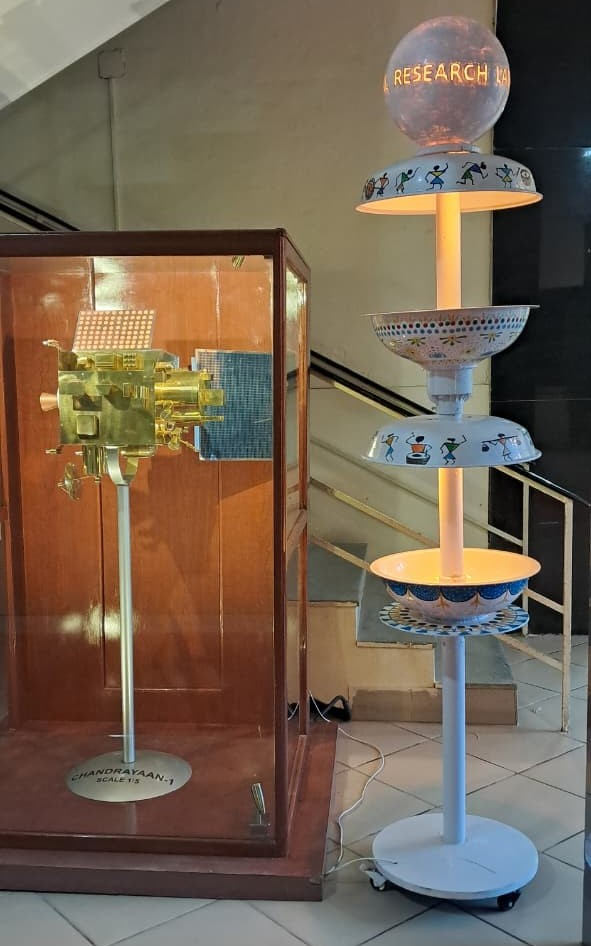
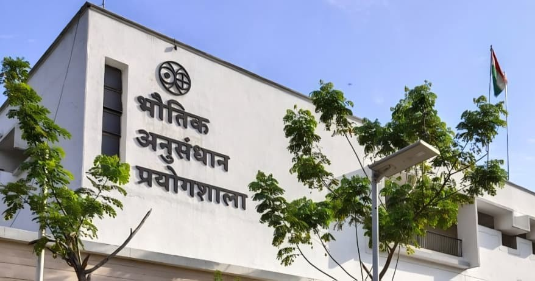
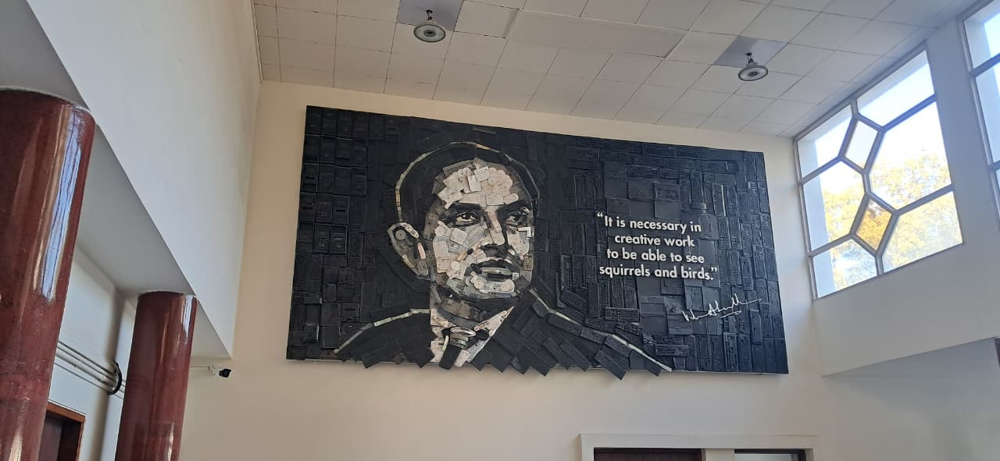
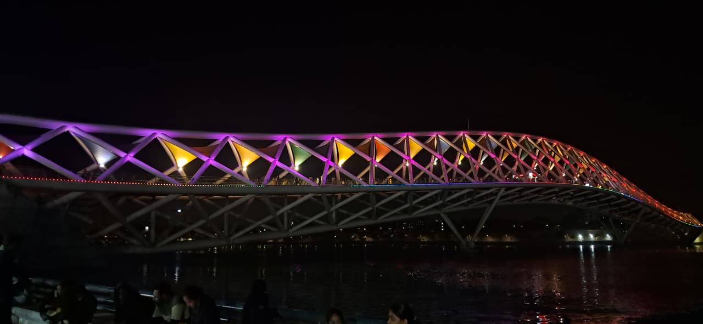
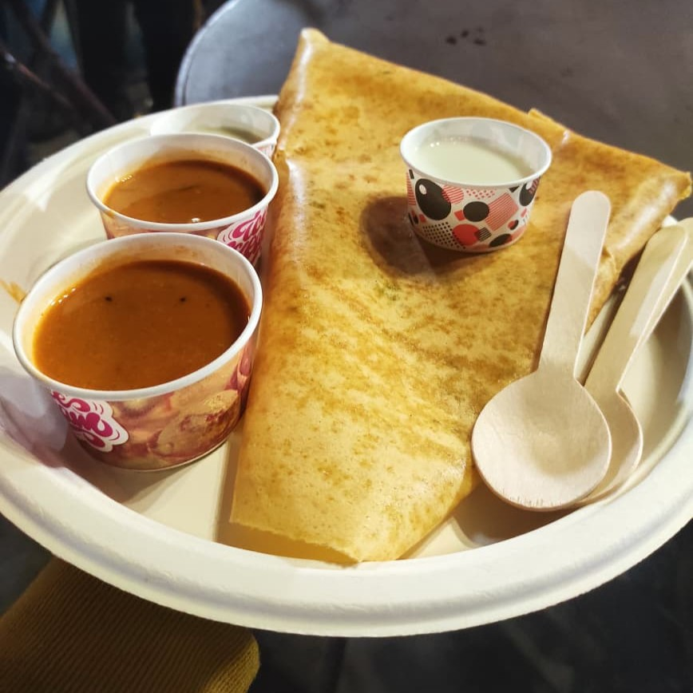
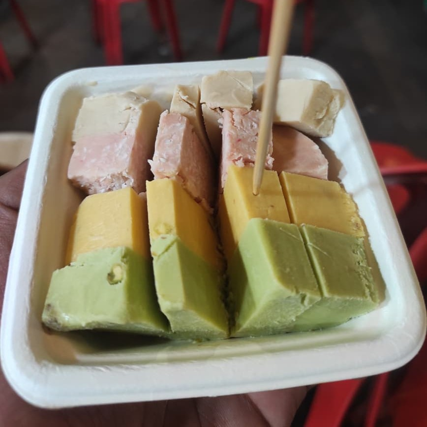
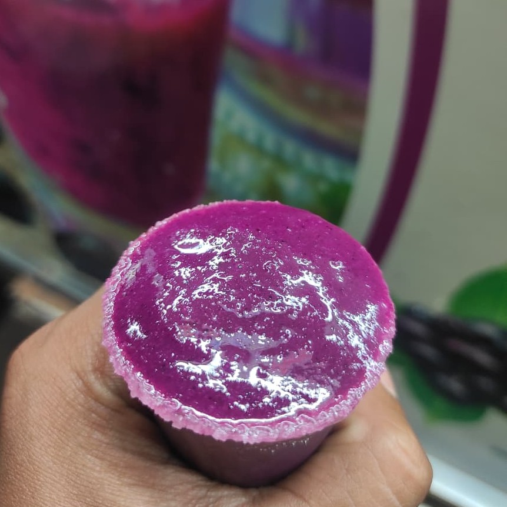

PRL Ahmedabad Research Internship

I feel privileged to have worked under the supervision of Sir Malaidevan P [Space and Atmospheric Sciences Division] at Physical Research Laboratory, Ahmedabad in December 2025. I had requested this opportunity through email, and whether one has to go to Navrangpura or Thaltej, is decided by their mentor. I worked in the Navrangpura campus, where main administrative offices are located.
My Work
Largely hands-on; it involved regular data collection, Arduino IDE, Python and studying research texts. I used to capture atmospheric measurements across various times in a day through Sun Photometer and Micro-Aethalometer. With guidance from my mentor and a former student of his, I set up an Aerosol Optical Depth retrieval process in the Arduino IDE, which also handled segmentation of the time-series data. Once we had enough data, Python was used for preprocessing and visualizations which could demonstrate temporal trends in the aerosol concentration. I also utilized techniques like Langley extrapolation that let me estimate the extraterrestrial constant and work out the irradiance values.
How was it like?
I appreciate campuses that hold on to their greenery, where flora and foliage are treated as something worth preserving rather than paving over, and PRL is very much one of them. Some evenings, I had the chance to attend poster presentations or seminars that drew researchers and scholars from a wide range of scientific disciplines.

This was my first time in Gujarat, and it was also the first occasion I lived off-campus while interning (Yes, accommodation within PRL itself isn't an option), but it was easy I'd say. I found a PG within walking distance, and it turned out to be fairly thrifty. Oddly enough for someone from my region, December never got particularly cold there, and I barely required my sweater.
This and that

Built from material like keyboard keys, mouse shells, telephone parts, and circuit fragments, it assembles into the unmistakable face of Dr. Vikram Sarabhai. Such kind of things make me pause mid-step and reach for my camera. It brought back memories of watching TV shows like Art Attack as a kid, where ordinary objects scattered across the floor would suddenly reveal a giant image once the camera panned up. Beyond simply admiring the craftsmanship, knowing more about how Dr. Sarabhai used to work makes the piece of art even more meaningful. For anyone unfamiliar, some of it is captured beautifully in the book 'Wings of Fire'.

By night, the pol houses settle into quiet, while a few streets away, Manek Chowk is just getting started, sizzling with the variety of street food and filled with the babble.



ફરી મળીશું ગુજરાત!